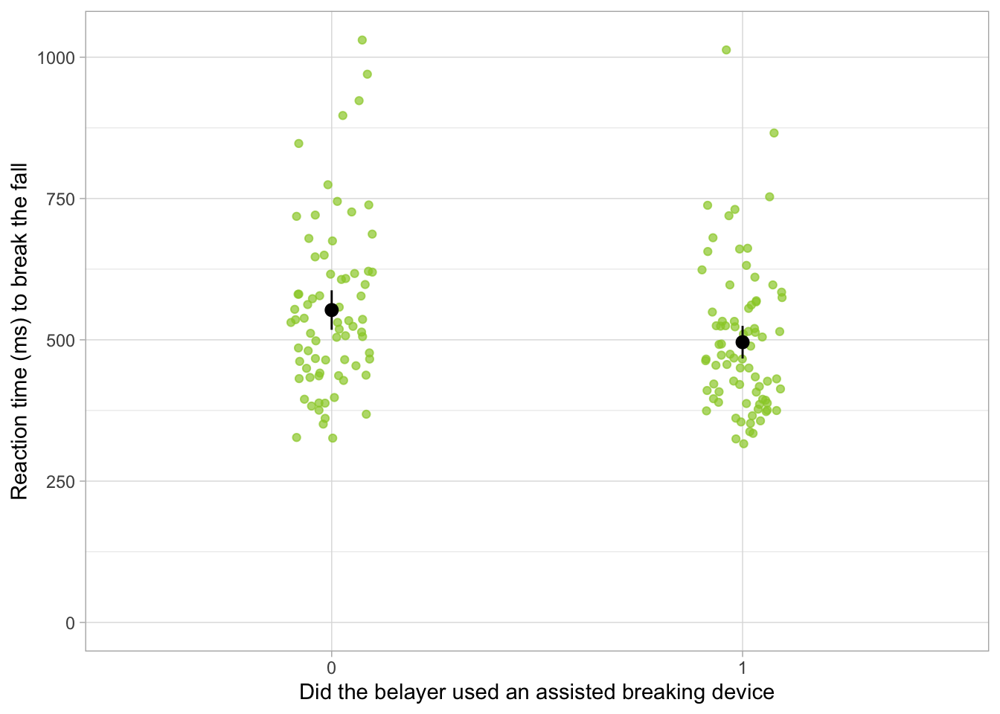
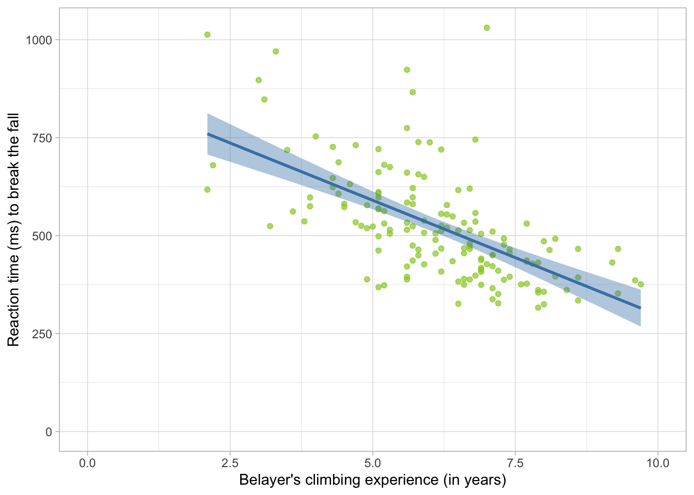
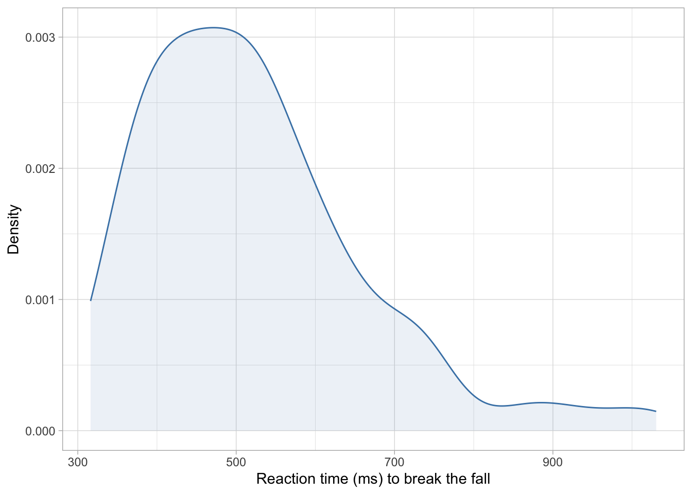
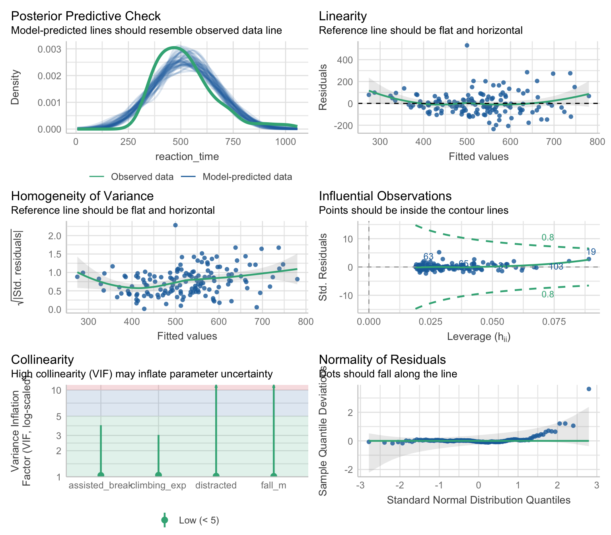
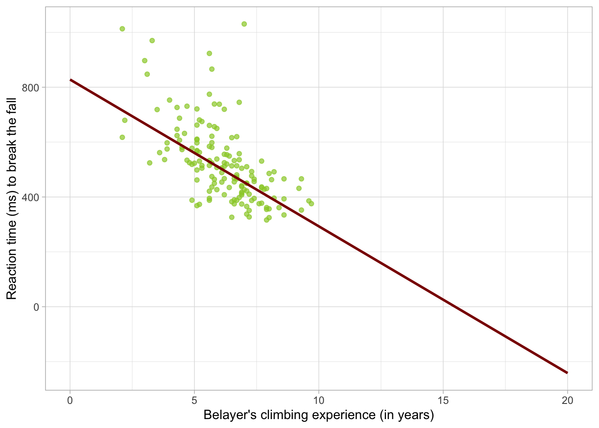
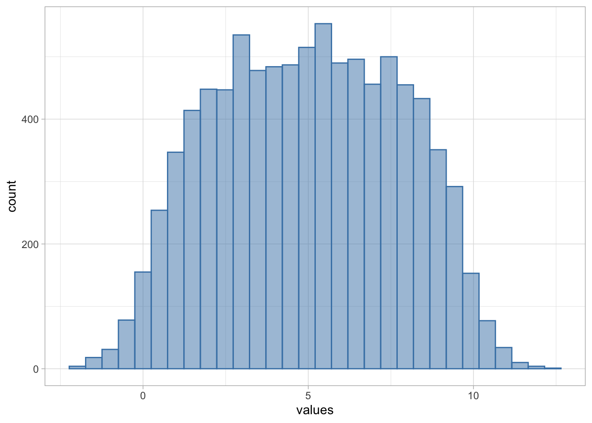
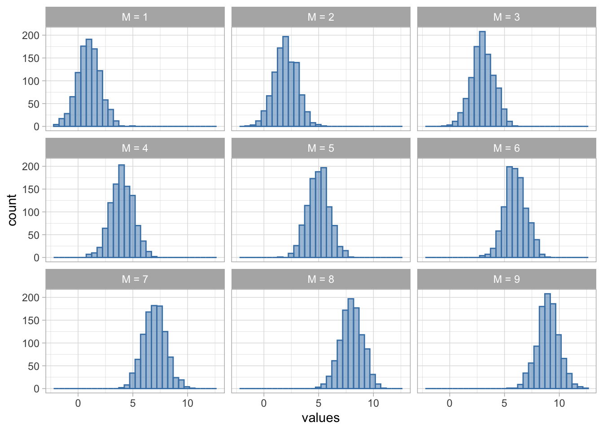

“Generalised Linear Model” is an umbrella term describing a flexible statistical modelling framework. Unlike the “General Linear Model”, which is often inadequate in real-life situations, Generalised Linear Models allow us to model a range of realistic scenarios without assuming an unrealistic data structure.
We’ll use the abbreviation GzLM for “Generalised Linear Model” and GLM for “General Linear Model”, however note that it’s common for people out in the wild to refer to either with GLM. Statisticians and data scientists are cool like that.
Before jumping into the GzLM, let’s run through a quick recap of the GLM, how it works and its limitations. Most of this should be familiar from An Adventure in Statistics - if you’re feeling confident about the ins and outs of the Ordinary Least Squares (OLS) estimation and robust estimation, you can read the Scenario below, skim through the code, and then move straight to the section Making predictions.
Scenario
A researcher in sports psychology is interested in understanding the factors related to the reaction times of belayers1 when breaking a fall of their climbing partners. She set up ultra-high resolution cameras at the local gym, then reviews the footage and records: the time it took for the belayer to effectively stop the fall after the climber lost control in milliseconds (reaction_time); whether the belayer used an assisted-breaking device (assisted_break - no/yes); and whether the belayer was talking to others or was otherwise distracted (distracted - no/yes). The researcher also collected information about the participants’ climbing experience in years (climbing_exp), and the length of the climbers’ fall in metres (fall_m).
The researcher hypothesises the following:
H1: More experienced belayers will be faster to catch falls.
H2: Belayers using an assisted breaking device will be faster to catch falls.
The data
The (fictional) dataset is stored in the file climbing_data.csv . First, let’s load up the necessary packages. Then, assuming you have imported the dataset into the data folder on Posit Cloud, you can read it into your R session as:
Specify the directory of the dataset with the here function.
4
Read the data, storing the result of this code into an object called belay_tib.
Let’s inspect the dataset to make sure it read in properly:
belay_tib
Table 1
We have six variables here: the ID of the participant subj_id , the outcome reaction_time and four predictors as specified in the Scenario above. assisted_break and distracted are currently encoded as 0s and 1s, 0 standing for “No” and 1 standing for “Yes”.
Factors and binary categorical predictors
Ideally, categorical predictors should be encoded as factors with meaningful labels. However if a categorical predictor with two categories is coded as 0 and 1, we don’t strictly need to convert them into factors. Zeros and ones are exactly what we use when dummy coding, so we can use these variables as they are to fit a model. R will cope just fine and the statistics will be valid. The output will just not be as helpfully labelled, so we need to remember that the beta for these predictors will tell is how larger or smaller the estimate of the category coded as 1 is compared to the category coded as 0.
Situations where we absolutely have to convert into factors or out right dummy codes include: when the nummeric categories are different to 0 and 1 (e.g. they’re 1 and 2, or 2 and 3 for whatever reason) or when there are more than two categories. Especially in the latter case, it makes no sense to treat a categorical predictor with three categories as if it was continuous.
Descriptive statistics
The next few steps should be familiar. We start by generating some descriptive summaries:
Pipe it into describe_distribution() which will provide general descriptive summaries. We’re including some optional arguments:
3
Apply formatting to create a nicer looking table (optional, but useful for e.g. writing reports)
Table 2
Variable
Mean
SD
IQR
Range
Skewness
Kurtosis
n
n_Missing
reaction_time
523.14
141.68
172.73
(316.12, 1030.44)
1.21
1.79
152
0
assisted_break
0.52
0.50
1.00
(0.00, 1.00)
-0.08
-2.02
152
0
distracted
0.49
0.50
1.00
(0.00, 1.00)
0.03
-2.03
152
0
climbing_exp
6.14
1.48
1.97
(2.10, 9.70)
-0.22
0.28
152
0
fall_m
1.82
0.41
0.60
(0.90, 3.00)
0.19
0.06
152
0
We have no missing values, for any of the variables (good to know). Reaction time (RT) is in millisecond so the average reaction time for stopping a fall was a little over half a second (523.14 ms). The quickest belayer caught a fall in 316 ms and the slowest in 1030 ms. On average, belayers had a climbing experience of 6.14 years, ranging from 2.1 to 9.7 years. Average fall length was 1.82 metres. The smallest recorded fall was 0.9 metres, the longest was 3 metres.We’re not interested in central tendency, dispersion, or skewness and kurtosis for the assisted_break and distracted (it makes no sense to inspect these for categorical predictors).
Climbing experience and fall distance show low levels of skewness and kurtosis. However, our outcome variable is positively skewed (skewness = 1.21), and has excess kurtosis substantially above 0 (kurtosis = 1.79).
This is not that surprising. Reaction times are bound at 0 (you cannot have a negative reaction time) and unbound on the opposite tail, so it really doesn’t make sense to expect a normal distribution, which is unbound on both ends. Even if we don’t have this intuition, reaction time is the best documented and most stereotypical variable known to have a skewed distribution. Despite this, researchers often model it with estimators that rely on normal distribution (somewhere in the process), simply because it’s convenient. So for now, we’re going to assume ignorance to see whether we can pry something meaningful out of the model using a regular linear model.
Normal distribution of the outcome
Remember that when we’re fitting an OLS-based linear model, the normal distribution of the outcome variable is not one of the assumptions. The actual assumption refers to the errors in the population model, which are best checked by inspecting the model residuals. However, the outcome variable will often (but not always) have a similar distribution to the residuals. It is therefore useful to inspect it in the initial stage, but we’ll still need to run the residual diagnostics after we’ve fitted the model.
Visualisation
For data visualisation, we’ll want:
A plot showing the hypothesised relationships between each predictor and the outcome.
A plot showing the distribution of the outcome, just so we have a better sense of what the variable looks like
Let’s start with H1:
belay_tib |>1 ggplot2::ggplot(data = _, aes(x = climbing_exp, y = reaction_time)) +2geom_point(alpha =0.7, colour ="yellowgreen") +3stat_smooth(method ="lm", colour ="steelblue", fill ="steelblue") +4coord_cartesian(xlim =c(0, 10), ylim =c(0, 1030.5)) +5labs(x ="Belayer's climbing experience (in years)", y ="Reaction time (ms) to break the fall") +6theme_light()
1
Specify the dataset and the aesthetics
2
Add raw data points
3
Add the line of best fit
4
Scale the y axis and the x axis to reflect the realistic scale of our outcome variable (the maximum value 1030.5 is based on values from Table 2)
5
Add meaningful labels
6
Add a theme (optional but generally a good idea)

Figure 1
Learning about ggplots
ggplot is a fantastic tool but the code is objectively difficult to remember - it’s chonky, and each line has far too many options for customisation. When working with ggplot code, don’t just copy and paste the whole code chunk and call it a day - instead, write the first line, run it, see what it does. Then write the second line, add it to the plot, and see what changes. And so on. This goes for any code that’s longer than just a couple of lines. By writing it line by line, you’ll get a better understanding of what the code does, which bits are crucial and which ones are just “nice to have”. For example, I didn’t need to change the colour of the points in line 3, nor did I need to add the jitter, or the labels for the x and y axis. Without these, the plot would still be understandable. But adding these elements the plot more readable and accessible.
Now let’s do the same for H2
belay_tib |>1 ggplot2::ggplot(data = _, aes(x =factor(assisted_break), y = reaction_time)) +2geom_point(alpha =0.7, colour ="yellowgreen", position =position_jitter(width =0.1)) +3stat_summary(fun.data ="mean_cl_normal") +4coord_cartesian(ylim =c(0, 1030.5)) +5labs(x ="Did the belayer used an assisted breaking device", y ="Reaction time (ms) to break the fall") +6theme_light()
1
Specify the dataset and which variable to put on each of the axes. Note that we’re wrapping assisted_break in the factor() function, so the plot treats it as such. This is optional. Again, it would have been better to convert the variable to the factor at the very beginning, but we’re keeping it as numeric for now because it makes some of the later calculations easier.
2
Add raw data points - this is good for inspecting potentially unusual cases
3
Add the mean and confidence intervals - this time, the predictor is categorical so we use stat_summary instead of stat_smooth
4
Scale the y axis
5
Add meaningful labels
6
Add a theme

Figure 2
Finally, let’s have a look at the distribution of the outcome:
belay_tib |> ggplot2::ggplot(data = _, aes(x = reaction_time)) +geom_density(colour ="steelblue", fill ="steelblue", alpha =0.1) +labs(x ="Reaction time (ms) to break the fall", y ="Density") +theme_light()

Figure 3
No code description for this one - see if you can work it out!
From Figure 1, we see that there is quite a steep negative relationship between climbing experience of the belayer and reaction time - the more experience the belayer is, the shorter they take to respond. At a glance, it also seems like the belayers who used an assisted-breaking device were slightly faster to react compared to those who didn’t (Figure 2).
Finally, Figure 3 confirms what Table 2 told us - that the outcome variable is right-skewed, with most values clustered towards the lower end an asymmetrical right tail. Without further ado, let’s confidently ignore this fact and hope for the best when fit an OLS linear model.
Ordinary Least Squares estimation
Fit the model
We can fit the linear model with all four predictors as:
Before diving straight into the result, we’ll need to check the model assumptions and assess the model fit.
Check model assumptions
belay_lm |>check_model()

Figure 4
Right of the bat, we have problems. The posterior predictive check (row 1 left) shows that the distribution of values predicted by the model doesn’t align with the distribution observed in the dataset. There appears to be slight non-linearity, and the spread of the residuals is greater as we move right along the x axis (row 1 right) - this indicates the errors are heteroscedastic. This is confirmed by the fact that the line is not completely flat in row 2 left plot. There don’t appear to be any influential observations, but case 19 has Cook’s distance that is close to the cut-off of 0.8 (row 2 right). No particular issues with collinearity (row 3 left). Finally, the Q-Q plot in row 3 right confirms what we suspect based on the outcome distribution - that the distribution of the residuals is skewed with potentially extreme values, as evident by the right tail lifting above the horizontal reference line.
Check model fit
We can get the overall fit statistics:
belay_lm |>performance() |>display()
AIC
AICc
BIC
R2
R2 (adj.)
RMSE
Sigma
1848.0
1848.6
1866.1
0.48
0.47
101.54
103.26
And test the overall fit:
belay_lm |>test_wald() |>display()
Name
Model
df
df_diff
F
p
Null model
lm
151
Full model
lm
147
4
34.33
< .001
Models were detected as nested (in terms of fixed parameters) and are compared in sequential order.
The model appears to be a good fit and a statistically significant improvement over a model where the reaction time is predicted from intercept alone, F(4,147) = 34.33, p < .001 , explaining 48.3% of total variance, R2 = 0.48 , R2adj = 0.47 . However, before we congratulate ourselves, let’s remember that the model assumptions were violated in almost every respect, so we might want to address this in some way.
Robust estimation
Robust estimation is one approach that can be used for dealing with violated assumptions - instead of interpreting the parameters from the OLS model, we fit a robust model that is not sensitive (or less sensitive) to violated assumptions. We then use the parameter estimates from this model to draw conclusions about the hypotheses.
There are many robust methods out there. To recap, some include:
Bootstrapping - useful in small samples when normal errors cannot be assumed
Heteroscedasticity-consistent standard errors - useful when homoscedasticity cannot be assumed
M-type estimators - useful when we have influential cases or asymmetric error distributions, but can also deal with heteroscedasticity.
Given that we’re dealing with asymmetric errors, heteroscedasticity, and potential influential cases (Figure 4), let’s fit an MM-estimator:
There is a negative but non-significant difference in reaction time between belayers who used an assisted breaking device compared to those who didn’t, b = -26.77, 95% CI [-54.52, 0.98], SE = 14.04, t = -1.91, p = 0.059 - those using a breaking device were only -26.77 quicker. Based on this we cannot reject the null hypothesis of no difference between belaying devices.
Belayers with more climbing experience were faster to stop a fall, while holding other predictors constant, b = -53.49, 95% CI [-65.79, -41.18], SE = 6.23, t = -8.59, p < .001. With a one year increase in climbing experience, we can expect the reaction time to reduce by -53.49 . The 95% confidence interval suggest this reduction could be as large as -41.18 or as low as -65.79 , assuming this confidence interval is one the 95% that contain the true population value. If the null hypothesis were true, the probability of finding an effect this large is sufficiently unlikely, p < .001. We therefore reject the hypothesis of null effect and retain H2.
What’s with this awful language…
Look, if it helps you make sense of this, here’s a slightly more direct version:
It is unlikely that we would find this difference if the effect itself was in reality 0, p < .001, which is in support of H2.
However, it is technically and statistically incorrect . A statistically significant p-value can never provide support for an alternative hypothesis, no matter how small. It only tells us if the alternative hypothesis is sufficiently unlikely if the null is true, but it doesn’t tell the probability of the null or the alternative hypothesis being true. Bayes Factors can tell us that, but that’s a whole other module.
The effects of both covariates were also statistically significant. Distracted belayers were slower to react b = 50.84, 95% CI [20.26, 81.42], SE = 15.48, t = 3.29, p = 0.001 , while an increase in 1 metre of fall length was associated with an increase of 76.16 milliseconds in time taken to stop the fall (p < .001). This is not surprising, is the climber had a greater distance to fall before the rope ran out of slack.
Making predictions
Now that we’ve caught up, let’s push our models even further. Generally, there are two reasons why we might want to build a statistical model. (1) To test a theory and help build a theoretical framework by explaining the roles of key variables or (2) to make a prediction. These two are not mutually exclusive.
That is, the outcome \(Y\) for the participant \(i\) is predicted from the sum of the intercept \(\beta_0\) a value of each predictor for that participant (\(X_1, X_2...\)), multiplied by the parameter estimate for each predictor, respectively (\(\beta_1 , \beta_2 ...\)). Each participant will also have their own error in prediction \(\varepsilon_i\) .
Let’s test this - how about we use the predictor values from the first participant from our dataset in Table 1 to see if we can use our model to predict their outcome?
Here are their values:
belay_tib[1, ] |>display()
subj_id
reaction_time
assisted_break
distracted
climbing_exp
fall_m
1017
847.40
0
1
3.10
2.10
We can assign these values into objects and then rewrite the equation.
If we run the code chunk above, the model predicts that the first participant should have a reaction time of milliseconds. However, their actual reaction was 847.4. This is because we forgot the last part of the equation, \(\varepsilon_i\). This represents the residual for our participant. We can extract it from the model and add it to the equation:
residual_i <- belay_rob$residuals[1] # extract the residual for the first participant689.29-26.77* assisted_break_i -53.49* climbing_exp_i +50.84* distracted_i +76.16* fall_m_i + residual_i
1
847.4194
In this case, the value matches perfectly, but this only works if we are predicting values that are already in the model, because we can extract the residual direct. In practice, we often want to predict values for individuals who are not in the dataset - in such a case we accept we’ll often be slightly off because we don’t know how large the residual could be, but our prediction is our best guess that will result in the least possible error.
Is there an easier way…?
Yes. R automatically computes the values your model predicts for every single participant. We did this manually above using the equation, but we could have just as easily done it with code. Fitted values can be accessed as:
belay_rob$fitted.values
This is a list of values that corresponds to the rows in our dataset. So the first value corresponds to the predicted value of reaction for the first participant:
belay_rob$fitted.values[1]
1
734.2276
This is exactly the value we calculated manually, so it’s good to know our maths works!
Going beyond the data
The nice thing about modelling relationships as straight lines is that once we know the intercept and the slope, we can pretty much extend the line in either direction and make predictions for values that are not represented in your dataset. Consider Figure 1 . Although the line only spans the range of the data, we could extend each end to make predictions.
Say that we’re interested in what the model predicts for individuals with no climbing experience, or, on the other hand, with extensive climbing experience. We’re going to create a new tibble with the values of climbing_exp for which we want to predict, that is, for belayers with anywhere between 0 and 20 years of experience.
Then we’ll hold the other predictors constant. For factors, we’ll hold the values at the baseline, so 0 or “No” for both assisted_break and distracted . The continuous predictor - fall length - will be held constant at the average value of fall_m from Table 2 . We’ll use the tibble function and store the result into an object called prediction_tib .
As requested, values in all rows are identical except for climbing_exp, which is changing. Now we can use this table to make predictions. The predict function is very handy here: it only takes two arguments: the model and the tibble with values which we want to use for prediction.
On its own, it can be used like this:
predict(belay_rob, prediction_tib)
Which returns a vector of predicted values. Let’s be a little more efficient - we’re going to take the tibble we’ve just created - prediction_tib and use the mutate function to create a new column called predicted_rt . This column is created by applying the predict function:
Take the existing prediction_tib. We’re updating an existing object instead of creating a new one, so the assignment operator <- is also pointing towards prediction_tib.
2
Use the mutate function to create a new variable.
3
Call this new variable predicted_rt. Create predicted_rt by applying the predict function to the robust model belay_rob and the prediction_tib which contains all the values for which we’re trying to generate predictions.
Once again, let’s inspect our work:
prediction_tib
This time the tibble has an extra column with predicted values. If you inspected the predicted_rt values, you may already noticed that something is wrong. Let’s add these on a plot so we can see the prediction more clearly:
belay_tib |> ggplot2::ggplot(data = _, aes(x = climbing_exp, y = reaction_time)) +geom_point(alpha =0.7, colour ="yellowgreen") +stat_smooth(colour ="darkred", data = prediction_tib, aes(x = climbing_exp, y = predicted_rt)) +labs(x ="Belayer's climbing experience (in years)", y ="Reaction time (ms) to break the fall") +theme_light()

Figure 5
We start the scatterplot above as usual. Then we add stat_smooth but instruct ggplot to use a different dataset and different aesthetics than the one we provided when we initialised the plot, so we can show our prediction that goes beyond the data.
If we look at what the model predicts for belayers with no climbing experience, it’s not particularly unusual. The reaction time is longer, though notice there are four individuals in the top left above the line who have more experience but also seem to have longer reaction times than newbies. The model doesn’t do a very good job predicting values for these belayers.
Now let’s look at very experienced belayers. The reaction continues going down, however as we get to about 15 years of experience, the model starts predicting negative reaction times.
This, of course, makes no sense. It turns out this the convenient feature of being able to easily extend the line once we know it’s starting point and the direction is also the downfall of linear models - the line can go on forever and will inevitably predict nonsense if the linear model is not the appropriate model.
Robust models are also - if not more - susceptible. They down-weigh scores with high residuals, especially scores at the tails of asymmetric distributions. The robust parameter estimate is therefore very good at describing what is happening at the centre of the distribution and make predictions for these scores, but it cannot describe or make predictions for individuals at the tails. That doesn’t mean robust models are useless. We just need be clear about what our intentions are and what we’re hoping to get out of the model. If the goal is to summarise the “typical individual” and we don’t particularly care about what’s happening at the tails, robust models might be just the solution we need.
If, however, we hope to be able to make conclusions about the whole distribution, we must take a different approach.
Introduction to GzLM
GzLM are useful and versatile, but we shouldn’t just think about them as a “fix” for GLM models that don’t meet the assumptions. When it comes to data analysis that involves confirmatory hypothesis testing with p-values, it’s generally a bad idea to base key analytic decisions on something we’ve discovered in the data because doing so invalidates the p-values derived from our models. In other words, a good analytic pipeline should not take the form of (1) fit an OLS model (2) discover violated assumptions (3) fit GzLM to fix the problems.
Instead, we should think about the data generating process when we are planning the analyses, or, better yet, before we even start data collection. Considering the variables we’re aiming to collect, what might the distributions look like? Is normal distribution a reasonable expectation? Is variance that doesn’t change at different values of the predictors a reasonable expectation? More often than not, the answer to the latter two questions is no.
How is GzLM different to GLM?
GLM uses Ordinary Least Squares (OLS) estimation to fit models. The goal of OLS is to find the values of \(\beta_0\), \(\beta_1\), \(\beta_2\) … so that the sum of squared errors (SSE) is as small is it can be given the data provided. Consider Figure 1 : if we were to measure the distance of each point from the line (i.e. the residual), square each distance and then sum all of them together, we’d get an SSE. For the model depicted in Figure 1, the line is the most optimal line that gives the smallest possible SSE.
The process is a little different for robust models using M-type estimation wherein the cases with the largest residuals get itteratively down-weighted until an optimal line is found, but the starting point is the result of OLS estimation.
Maximum Likelihood estimation
GzLM use Maximum Likelihood Estimation (ML)2. ML aims to find an optimal way to fit a given distribution to the data. It searches for the values of the the parameter estimates where a given assumed distribution is the most likely. In other words, where the likelihood of that distribution is at its maximum.
Conditional distributions
What are we assuming the distribution of?
We know that OLS makes assumptions about the shape of errors in the population model - that is, it assumes they are normally distributed. Various guides will sometimes claim that we need to be checking a so called “response distribution”, which is just another word for the outcome. This is not quite right.
ML estimation makes assumptions about the conditional distribution of the outcome. Say that we’re trying to model the relationship between X and Y where
\[
Y_i = \beta_0 + \beta_1 X_i
\]
If we model this as a Gaussian model - that is, a model assuming a normal conditional distribution - we’re assuming that that the outcome Y is normally distribution at any value of X. As a formula, we would write:
\[
P(Y|X) \sim N(\mu, \sigma^2)
\]
That is, any Y value given any X values comes from a normal distribution with a mean \(\mu\) and variance \(\sigma^2\) .
The nice thing about GzLMs is that we can just relax this assumption if a different distribution is more appropriate.
For example here:
\[
P(Y|X) \sim \Gamma(\alpha, \theta)
\]
we’re saying that the conditional distribution of Y given X is a Gamma distribution with a shape \(\alpha\) and scale \(\theta\) . More on this in section Modelling Skewness.
This distinction between the distribution of the outcome variable and the conditional distribution of the outcome variable is important. Similar to OLS, if we check the distribution of the outcome, it often will resemble the conditional distribution but this not a given - the outcome distribution will be composed of the many conditional distributions at various levels of the predictor(s) and there is no guarantee that the shape of all of these distributions will resemble the one we’re modelling when combined into the outcome variable.
Have a look at Figure 6 . Hopefully you’ll agree that this is not a normal distribution:

Figure 6
However, if we were do decompose it, we’d find that the distribution in Figure 6 is actually built out of many normal distributions with different means:

Figure 7
Therefore checking the distribution of the outcome itself might be a good starting point, but it can lead us astray, especially if the conditional distribution substantially varies in parameters.
Mean-variance relationship
In GLM, we assume a constant variance of errors. That is, regardless of the predicted value, the spread of errors remains the same - this is homoscedasticity. Its violation, as we saw in Figure 4 is called heteroscedasticity.
M-type robust estimators attempt to fix the impact of heteroscedasticity by (1) down-weighting cases with extreme residuals and (2) using an alternative estimator for the standard errors. Either way, heteroscedasticity is seen as some nuisance to be fixed.
On the other hand, GzLM can model various forms of heteroscedasticty explicitly and build these changes in variance into predictions. Different conditional distributions make different assumptions about the mean-variance relationship. For example, Gamma models assume a quadratic relationship:
\[
V(Y) = E(Y)^2
\]
i.e. in a given conditional distribution, the variance of scores will be equal to the squared expected3 value. Alternatively, the Poisson distribution can model a situation where the expected value is equal to the variance.
\[
V(Y) = E(Y)
\]
We’ll cover these situations in more detail in the upcoming weeks. The bottom line is that GzLM offers a lot more flexibility than GLM, which can be useful in a variety of applied scenarios. So before we get too bogged down in terminology, let’s fit one more bad model to get the hang of the coding, and then we’ll finally move on to modelling tackling out hypotheses properly by choosing a more appropriate modelling approach.
Fitting GzLM in R
So let’s fit our model. We’re still going to (wrongly) assume the normal conditional distribution for our outcome, but this time we’ll fit the model using maximum likelihood estimation instead of OLS.
Use the glm() function instead of lm() . Store into an object belay_glm
2
Specify the formula - same as before.
3
Specify the family and the link function (see below)
4
Specify the dataset - same as before
The main difference from the OLS model or the robust model is this line: family = gaussian(link = "identity") . Here, we’re telling R to assume normal conditional distribution (i.e. gaussian). We’re also asking R not to transform the variables in any way and model the relationship as linear directly (`link = "identity"). We’ll talk about what exactly this means in the upcoming sections but for now you just need to understand that the link = "identity" ensures that the parameter estimates we get out of the model can be interpreted as we’re used to, as a linear increase in the outcome expected with an increase of one unit in the predictor.
We can run the model checks as normal - the output is the same as before and can be interpreted as such, so there’s no need to repeat it here.
The parameter estimates will also be identical. The ML estimation is an algorithmic process with several steps, in which the model tries out different values before converging on ones with the maximum likelihood given the data. However, with Gaussian models, this algorithm converges on the exact same parameter estimates as OLS right after the first step.
We’ve not actually produced the OLS estimates before, so let’s compare them to the ML estimates side by side:
Although the estimates themselves are the same, the confidence intervals and the p-values are not. This is deliberate. When we fit OLS models, we use the critical t statistic4 based on the residual degrees of freedom to construct the CIs. The test statistic is then calculated by dividing the parameter estimate by its standard error, and this is compared against a theoretical t distribution to calculate the p-value.
When we fitted the GzLM, we explicitly told R to assume a normal/Gaussian distribution. So the model takes us for our word, and instead of using the t distribution, it compares the test statistic against a normal distribution. Likewise, the CIs are constructed using the critical Z value, not the critical t value. The parameters function is quite clever in that it automatically detects what kind of model we fitted and gives us the result based on that.
Conclusion
Of course, if we were to actually run any of the model checks, we’d still find that the model is fundamentally flawed. Regardless of the approach, a normal distribution is not the appropriate distribution to be assuming here. If we fit a robust model, the predictions we’re generating are only useful for the middle of the distribution, while the predictions at the tails breach the realm of science-fiction with reality-bending reaction times. If we want to create a useful model of the reality, we need to change the assumptions we’re making about the data-generating process.
Welcome to the family
The General Linear Model encompasses many types of models that use OLS estimation (like the t-test, ANOVA, regression and others). The Generalised Linear Model takes this even further and can model various forms of the Exponential Family . This may seem counter-intuitive because when we say “Exponential” we often imagine a line that grows or descends steeply (or “exponentially”), but this distribution family in an overarching group of distributions that come in many shapes and sizes, including:
Bernoulli distribution (often assumed in logistic regression)
Chi-squared distribution
Dirichlet distribution
Exponential distribution
Gamma distribution
Normal distribution (yes, even normal distribution)
Poisson distribution
and others. We’re going to learn about some of these in the coming weeks.
Exercises
What does this code do?
Here’s all the code we have written in this section. Can you remember what each line of each codechunk does? Are there any codechunks that you struggle to make sense of? Make sure to revisit the section in which it is used and take notes.
belay_tib |> ggplot2::ggplot(data = _, aes(x = climbing_exp, y = reaction_time)) +geom_point(alpha =0.7, colour ="yellowgreen") +stat_smooth(method ="lm", colour ="steelblue", fill ="steelblue") +coord_cartesian(xlim =c(0, 10), ylim =c(0, 1030.5)) +labs(x ="Belayer's climbing experience (in years)", y ="Reaction time (ms) to break the fall") +theme_light()
belay_tib |> ggplot2::ggplot(data = _, aes(x = reaction_time)) +geom_density(colour ="steelblue", fill ="steelblue", alpha =0.1) +labs(x ="Reaction time (ms) to break the fall", y ="Density") +theme_light()
belay_tib |> ggplot2::ggplot(data = _, aes(x =factor(assisted_break), y = reaction_time)) +geom_point(alpha =0.7, colour ="yellowgreen", position =position_jitter(width =0.1)) +stat_summary(fun.data ="mean_cl_normal") +coord_cartesian(ylim =c(0, 1030.5)) +labs(x ="Did the belayer used an assisted breaking device", y ="Reaction time (ms) to break the fall") +theme_light()
A “belayer” is the person on the ground, managing the rope and ensuring the climber on the wall is safe.↩︎
Unhelpfully, the ML abbreviation is also reserved for “Machine Learning”, so just be aware of this if you’re using any external resources.↩︎
You could substitute the term “expected” with “predicted”. The only difference is that we tend to use “predicted” when talking about a single value, and “expected” when talking about a whole distribution, but for all intents and purposes, they are the same.↩︎
This is not the same as the t statistic that we see in the tables.↩︎